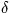

| R2000 | D | J2000.0 FK5 |
|---|---|---|
| D2000 | D | J2000.0 FK5  (radians) |
| BEPOCH | D | Besselian epoch (e.g. 1950D0) |
| R1950 | D | B1950.0 FK4 |
|---|---|---|
| D1950 | D | B1950.0 FK4 at epoch BEPOCH (radians) |
| DR1950 | D | B1950.0 FK4 proper motion in |
| DD1950 | D | B1950.0 FK4 proper motion in (radians per tropical year) |
SLALIB --- Positional Astronomy Library